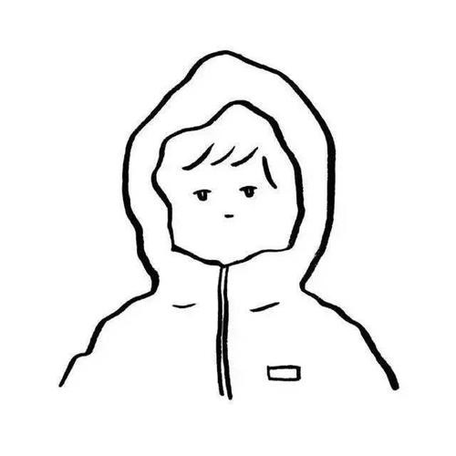
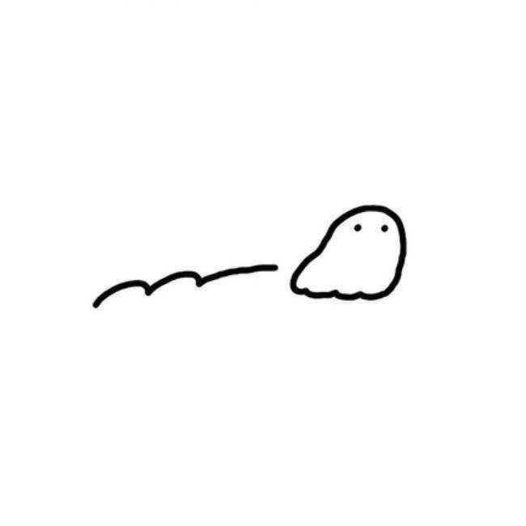
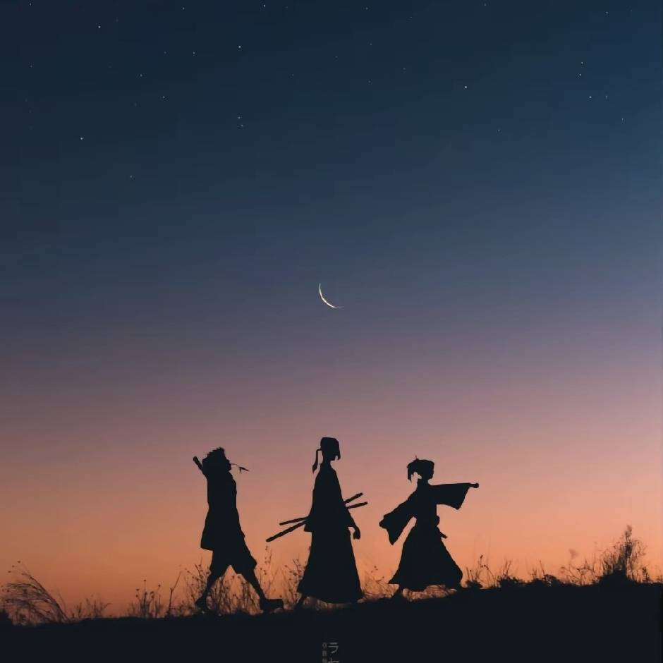

🔥 本周热门

从拉萨出发，沿着G318国道穿越雪山草原，记录布达拉宫的晨光、羊卓雍措的碧水、珠峰大本营的星空...
2.8k
356
689
📸 精选摄影
从筑地市场到涩谷小巷，72小时吃遍东京23家必吃小店，包含米其林推荐和本地人私藏清单...
3.5k
428
891
🏰 欧洲小镇

穿梭在布拉格的老街巷中，晨光洒在哥特式教堂的尖顶上，广场上的天文钟每小时敲响，仿佛时光倒流...
1.9k
276
543
🌸 樱花季
从哲学之道到平安神宫，记录樱花盛开的瞬间，分享最佳拍摄地点和时间，捕捉春日的浪漫...
4.2k
512
1.2k
⛰️ 徒步探险
从香格里拉出发，徒步穿越原始森林，攀登4000米海拔，近距离感受梅里雪山的壮丽和神圣...
3.1k
408
756
🎨 艺术之旅

从卢浮宫到奥赛博物馆，再到蓬皮杜中心，一场视觉盛宴，探索艺术大师的杰作和现代艺术的前沿...
2.7k
386
624